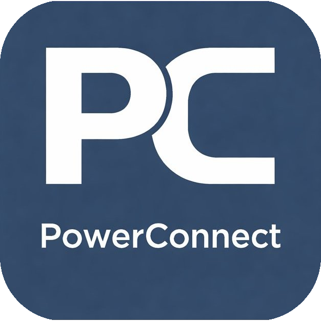

Projeler
Geliştirdiğim ve üzerinde çalıştığım projeler. Liste büyüdükçe burada güncellenecek.

PowerConnectPardus Linux tabanlı, açık kaynaklı sınıf yönetim aracı. Öğretmenin ekranını öğrenci bilgisayarlarına gerçek zamanlı yayınlamasını, öğrenci ekranlarını canlı izleyip uzaktan kontrol etmesini, dosya göndermesini ve öğrenci dosya sistemine erişmesini sağlar — tamamen yerli ve milli Pardus ekosistemi için geliştirildi.
- UDP broadcast ile otomatik ağ keşfi — manuel IP girişi gerekmez
- 25 FPS gerçek zamanlı ekran yayını + uzaktan fare/klavye kontrolü
- Çoklu bağlantı, toplu dosya gönderme ve uzak dosya gezgini
- systemd servisi olarak kilitli kurulum (yalnızca format ile kaldırılır)
WireScope
.pcap ve .pcapng dosyalarını analiz ederek DNS, HTTP, TLS, IP, port, conversation ve forensic finding bilgilerini çıkaran hafif bir network-forensics toolkiti. Capture'ı belleğe topluca yüklemeden akış halinde işler; bulgular kesin hüküm değil, analistin incelemesi için temkinli hipotezler olarak sunulur.
- PCAP / PCAPNG analizi: IPv4/IPv6, TCP/UDP/ICMP/ARP istatistikleri
- DNS / HTTP / TLS (SNI) çıkarımı
- Conversation / flow istatistikleri ve IOC eşleştirme (IP/domain)
- Forensic finding'ler ve JSON / CSV / offline HTML raporlar
Projeler
Bu Portfolyo Sitesi
Sıfırdan tasarlanmış, dependency içermeyen vanilla HTML/CSS/JS ile geliştirilmiş kişisel portfolyo. Erişilebilirlik, performans ve SEO gözetilerek kuruldu; GitHub Pages üzerinden statik olarak yayınlanıyor.
Daha fazlası yolda
Security research, CTF tooling ve otomasyon üzerine çalıştığım projeleri tamamladıkça burada, gerçek repo bağlantıları ve detaylarıyla birlikte paylaşacağım. Uydurma proje eklemek yerine boş bırakmayı tercih ettim.